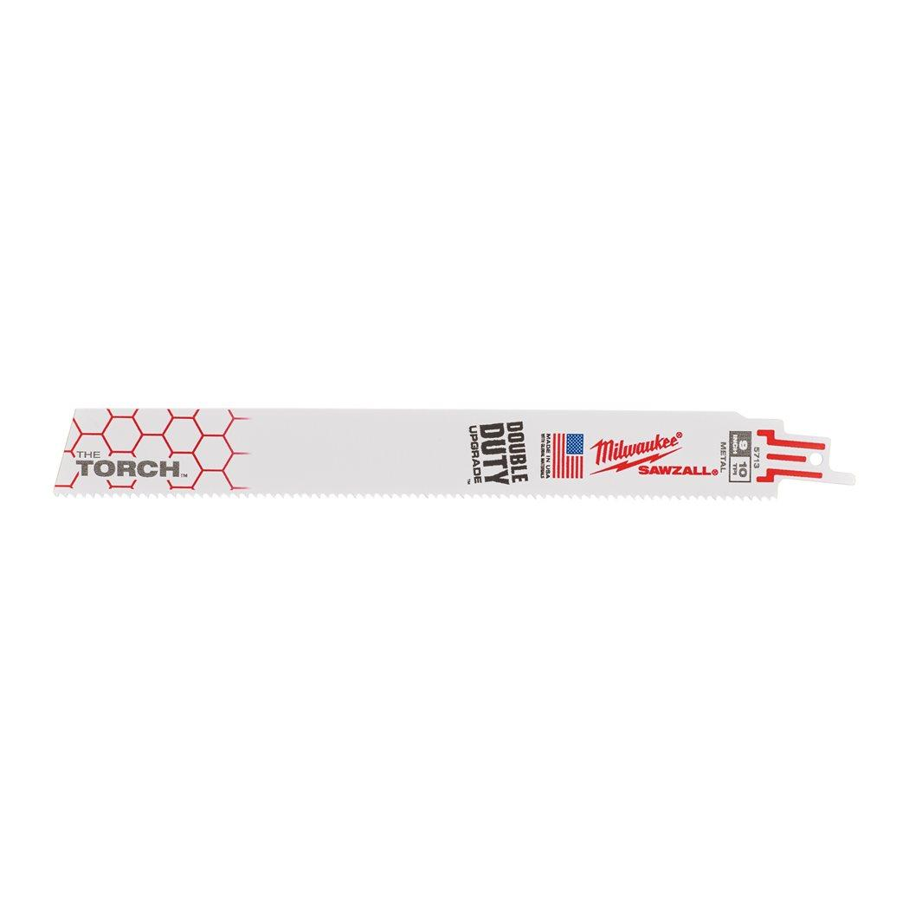

| Blade length (mm) | 230 |
| Materials suited for | Thick metal > 4 mm|Medium metal 1.5 - 4 mm|Thin metal 0.5 - 3 mm|Stainless steel|Non ferrous metal (Cu/Al) |
| Max. cutting capacity cast iron pipe (mm) | ⌀ 10 - 175 |
| Max. cutting capacity metal pipe ⌀ (mm) | ⌀ 10 - 175 |
| Max. cutting capacity non-ferrous metals (mm) | 5 - 14 |
| Max. cutting capacity stainless steel (mm) | 5 - 10 |
| Max. cutting capacity steel (mm) | 5 - 14 |
| Pack quantity | 5 |
| Ref. No. | S1226CHF/S1136CHF |
| Rescue | Yes |
| Article Number | 48475713 |
| EAN | 045242369003 |